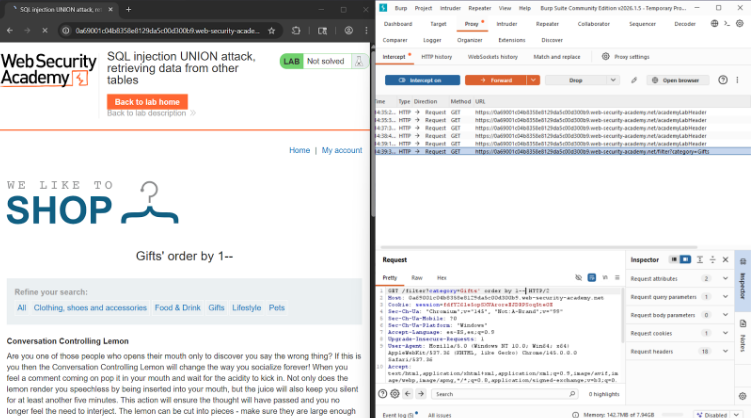
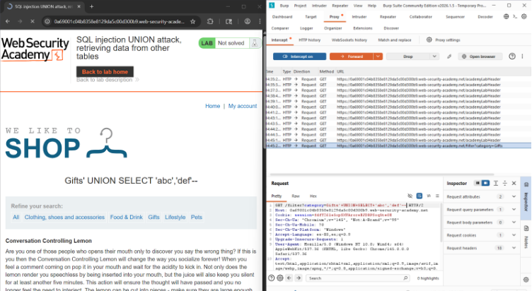
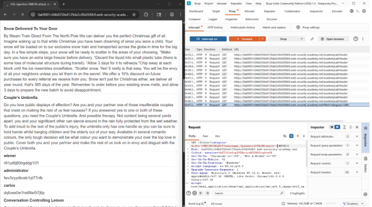
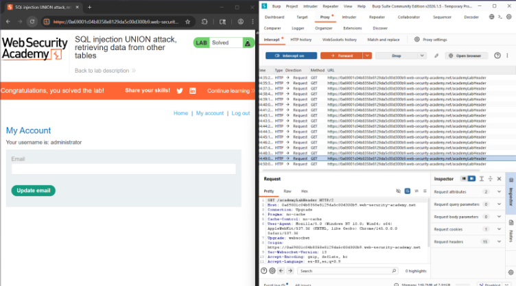

← Volver
← Volver

CNO V - Seguridad Informática
Practitioner
In-Band – UNION Based
Extraer datos desde otras tablas.
La vulnerabilidad se origina porque la aplicación construye dinámicamente la consulta SQL incorporando directamente la entrada del usuario en la cláusula WHERE, sin emplear consultas parametrizadas ni validación adecuada. Esto permite que un atacante inyecte una cláusula UNION SELECT adicional compatible en número y tipo de columnas con la consulta original. Como resultado, la base de datos ejecuta ambas consultas dentro de una sola instrucción y devuelve datos provenientes de otras tablas no destinadas a ser accesibles desde la interfaz. Esta falta de separación entre datos y código posibilita la exposición directa de información sensible almacenada en la base de datos.
Request interceptado

Payload utilizado

Respuesta vulnerable


Confirmación

El payload utiliza la cláusula UNION SELECT para combinar los resultados legítimos de la consulta con datos provenientes de otra tabla, en este caso la tabla de usuarios. Al igualar el número de columnas, la base de datos acepta la consulta y devuelve nombres de usuario y contraseñas dentro de la respuesta de la aplicación.
Se recomienda el uso de consultas parametrizadas para evitar que la entrada del usuario sea interpretada como código SQL. También es importante validar entradas y restringir los permisos de la base de datos para evitar accesos innecesarios a tablas sensibles.